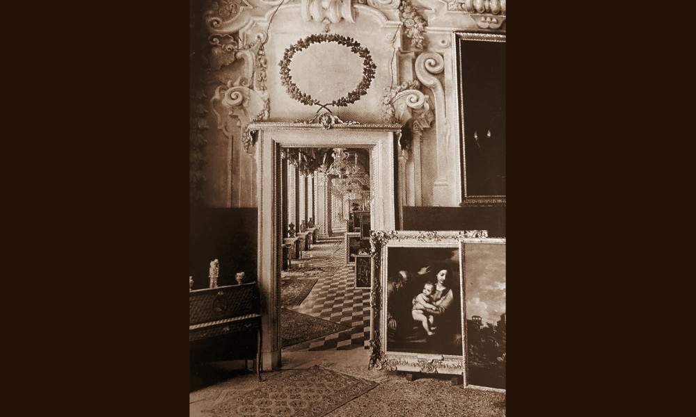

Pagano

- Dati biografici
- Albero familiare
- Luoghi
- Relazioni
- Bibliografia
- Opere trattate
Piero Pagano (1929-2007) è stato un mercante d’arte attivo a Genova nella seconda metà del Novecento. Dopo aver frequentato il liceo artistico, iniziò a collaborare nella bottega di restauro e poi nella galleria dello zio Pompeo Rubinacci (1893-1974), con il quale lavorò nel corso degli anni Sessanta a Palazzo Negrone in piazza Fontane Marose.
Pagano si specializzò in pittura genovese del Seicento, del quale fu un attento studioso. Dal suo interesse come ricercatore nacque il libro La pittura del ‘600 a Genova, scritto con Maria Clelia Galassi e pubblicato nel 1988.
Nel 1987, Piero Pagano, insieme a Marco Capozzi (ora Boetto), fondò la Casa d’Aste Rubinacci, intitolata allo zio mancato nel 1974. Fu la prima casa di vendite sul territorio genovese e rimase attiva fino al 2006, con una prima sede in via Garibaldi 8, poi spostata in via dello Zerbino 10 intorno al 2000.
Pagano commerciava opere d’arte anche in forma privata, accogliendo clienti nel suo appartamento, che fungeva anche da galleria. Tra i collezionisti più importanti che acquistarono da lui sono documentati Aldo Zerbone e Orazio Bagnasco.
Bibliografia essenziale:
- Romanengo, M. (2001), Il mondo del collezionismo privato a Genova nel Novecento., In Orlando, pp. 110-120
Interviste:
- 29/05/2023, Intervista a Roberto Siciliani.
Vedi le opere transitate presso l’antiquario documentate nell’archivio fotografico della Fondazione Federico Zeri: catalogo della Fondazione Zeri